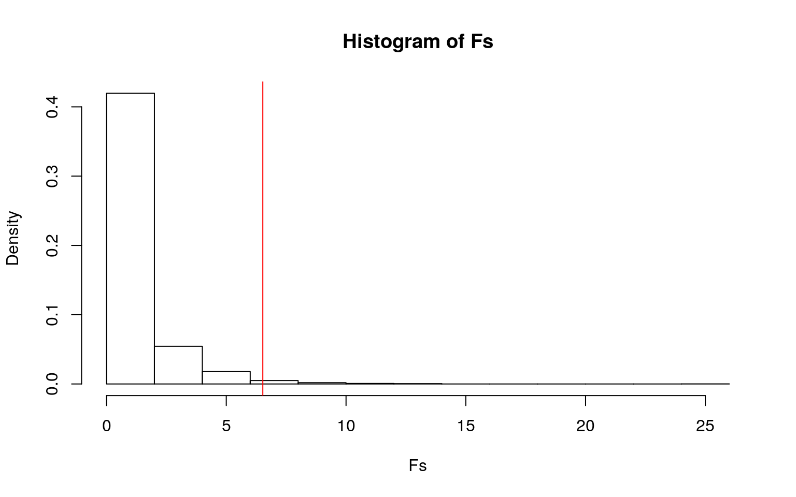
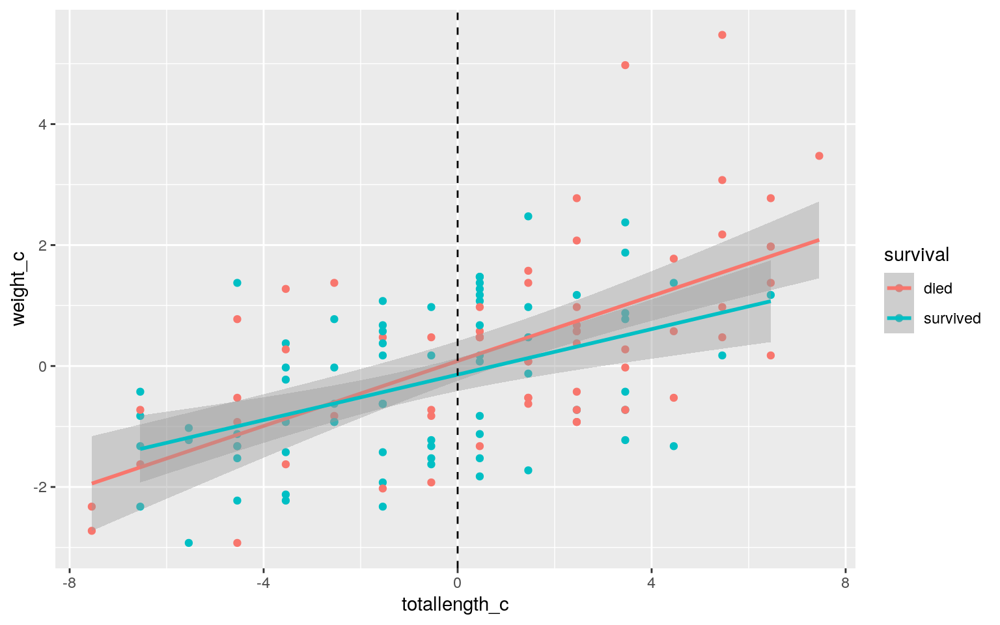
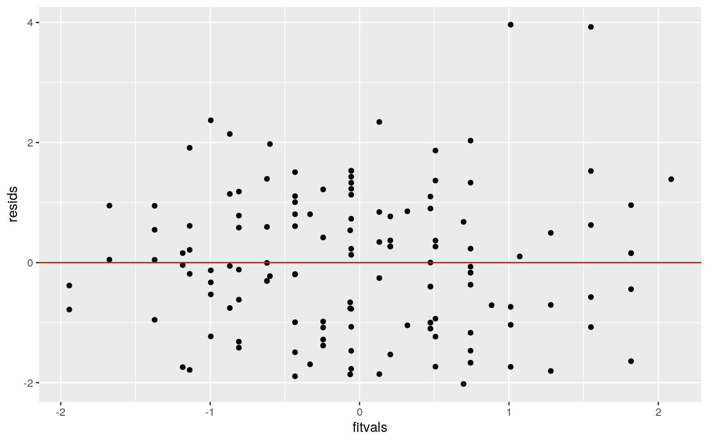
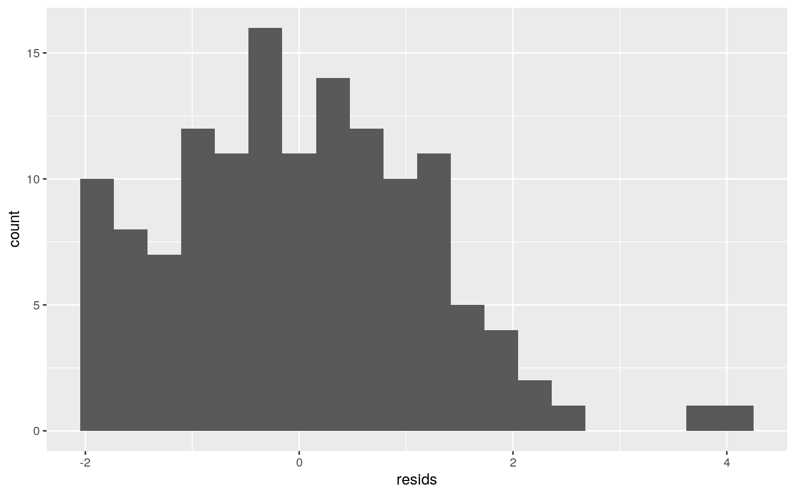
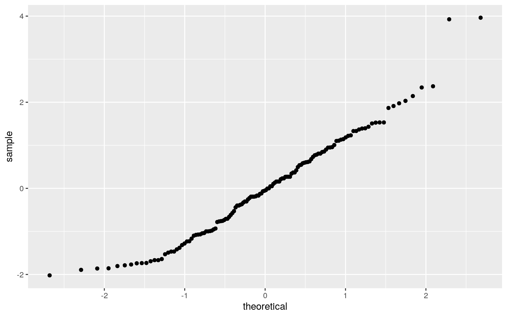
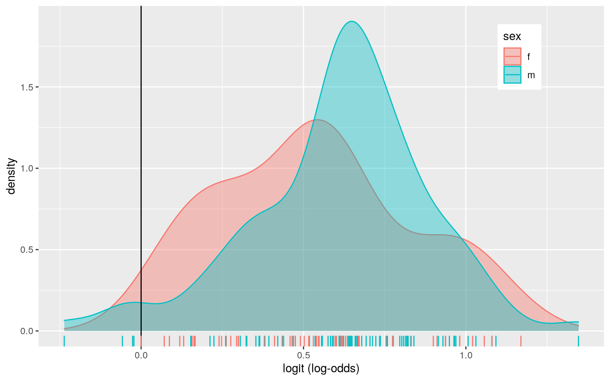
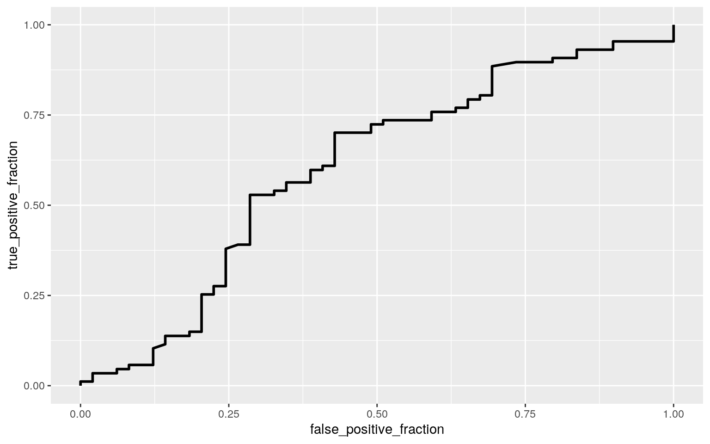

I chose the bumpus data set on Professor Bumpus’ sparrows, which he caught in the 1880s. He determined their sex and measured 9 morphological traits, so I thought it would be interesting to compare male and female survival rates and sex to the various lengths of their body parts. I took evolution a few semesters ago and it was one of my favorite classes! The data set includes numeric variables on the total sparrow length, the alar length, bird weight, head and beak lengths, humerus length, femur length, tibiotarsus length, skull width, and keel width. Additionally, the data set includes the sex of the bird (male or female, dummy coded) and if the bird survived or not (true or false), which can be coded as binomials. Since both sex and survival could be binomial, I used both in regressions to add a more robust analysis of the sparrows. In total, there are 136 observations and 14 total variables.
bumpus<-read.csv("bumpus.csv",header=T)
bumpus$age<-NULL
library(rstatix)
group <- bumpus$survival
DVs <- bumpus %>% select(length_beak_head_mm, total_length_mm, length_humerus_in, weight_g)
sapply(split(DVs, group), mshapiro_test) #multivariate normality assumption## died survived
## statistic 0.9567045 0.9787421
## p.value 0.02477438 0.2625649box_m(DVs, group) #covariance matrices assumption## # A tibble: 1 x 4
## statistic p.value parameter method
## <dbl> <dbl> <dbl> <chr>
## 1 12.2 0.273 10 Box's M-test for Homogeneity of
Covariance Matricesman1<-manova(cbind(length_beak_head_mm, total_length_mm, length_humerus_in, weight_g)~survival, data=bumpus)
summary(man1)## Df Pillai approx F num Df den Df Pr(>F)
## survival 1 0.237 10.172 4 131 3.339e-07 ***
## Residuals 134
## ---
## Signif. codes: 0 '***' 0.001 '**' 0.01 '*' 0.05 '.' 0.1
' ' 1summary.aov(man1)## Response length_beak_head_mm :
## Df Sum Sq Mean Sq F value Pr(>F)
## survival 1 0.293 0.29340 0.5929 0.4426
## Residuals 134 66.307 0.49482
##
## Response total_length_mm :
## Df Sum Sq Mean Sq F value Pr(>F)
## survival 1 106.88 106.876 8.9238 0.003348 **
## Residuals 134 1604.86 11.977
## ---
## Signif. codes: 0 '***' 0.001 '**' 0.01 '*' 0.05 '.' 0.1
' ' 1
##
## Response length_humerus_in :
## Df Sum Sq Mean Sq F value Pr(>F)
## survival 1 0.002452 0.00245200 4.731 0.03138 *
## Residuals 134 0.069450 0.00051828
## ---
## Signif. codes: 0 '***' 0.001 '**' 0.01 '*' 0.05 '.' 0.1
' ' 1
##
## Response weight_g :
## Df Sum Sq Mean Sq F value Pr(>F)
## survival 1 13.643 13.6428 6.5255 0.01175 *
## Residuals 134 280.152 2.0907
## ---
## Signif. codes: 0 '***' 0.001 '**' 0.01 '*' 0.05 '.' 0.1
' ' 1pairwise.t.test(bumpus$length_beak_head_mm,
bumpus$survival, p.adj="none")##
## Pairwise comparisons using t tests with pooled SD
##
## data: bumpus$length_beak_head_mm and bumpus$survival
##
## died
## survived 0.44
##
## P value adjustment method: nonepairwise.t.test(bumpus$total_length_mm,
bumpus$survival, p.adj="none") #1 test##
## Pairwise comparisons using t tests with pooled SD
##
## data: bumpus$total_length_mm and bumpus$survival
##
## died
## survived 0.0033
##
## P value adjustment method: nonepairwise.t.test(bumpus$length_humerus_in,
bumpus$survival, p.adj="none")##
## Pairwise comparisons using t tests with pooled SD
##
## data: bumpus$length_humerus_in and bumpus$survival
##
## died
## survived 0.031
##
## P value adjustment method: nonepairwise.t.test(bumpus$weight_g,
bumpus$survival, p.adj="none")##
## Pairwise comparisons using t tests with pooled SD
##
## data: bumpus$weight_g and bumpus$survival
##
## died
## survived 0.012
##
## P value adjustment method: noneI started this analysis with 4 morphological variables: beak and head length, total sparrow length, total weight, and humerus length, because these are 4 different body parts/statistics of the sparrows. After performing a MANOVA test, I found that my p value showed a significance difference across my categorical variable of whether the birds survived or not (p = 3.339e-7). The univariate ANOVAs showed that beak and head length is not significant across survival (p=0.4426), but the total bird length (p=3.348e-3), humerus length (p=0.0314), and weight of the birds (p=0.0118) are significant compared to the survival category. The post-hoc t tests proved that survival did not differ from death based on beak and head length, but survival was significant from death based on total bird length, humerus length, and total bird weight (values less than 0.05). In total, I performed 4 t tests, 4 ANOVAs, 1 MANOVA, equaling 9 tests overall with a high type 1 error rate of 0.3698 (36.98%). The significance level would be adjusted to 0.0056 based on the bonferroni correction. After making this correction, head and beak length remains insignificant (p>0.0056), but after adjusting the significance level accordingly, the humerus length (p>0.0056, p is 0.0314) and the weight of the birds (p>0.0056, p is 0.0118) are no longer significant. However, the total length of the bird remains significant after the bonferonni correction (p<0.0056, p is 0.0035). The random sampling assumption has been met; sparrows from throughout Providence were randomly sampled in Bumpus’ lab after a winter storm, which were them measured for the morphological traits in the dataset. We can reject the null hypothesis that multivariate normality is met, because the p value for the false category is below 0.05 in the Shapiro-Wilk test. However, the homogeneity of covariance matrices are met and not violated because the p value is greater than 0.05.
#F statistic randomization test
summary(aov(weight_g~survival,data=bumpus))## Df Sum Sq Mean Sq F value Pr(>F)
## survival 1 13.64 13.643 6.526 0.0118 *
## Residuals 134 280.15 2.091
## ---
## Signif. codes: 0 '***' 0.001 '**' 0.01 '*' 0.05 '.' 0.1
' ' 1pairwise.t.test(bumpus$weight_g, bumpus$survival, p.adj = "none") ##
## Pairwise comparisons using t tests with pooled SD
##
## data: bumpus$weight_g and bumpus$survival
##
## died
## survived 0.012
##
## P value adjustment method: noneobs_F<-6.526
Fs<-replicate(5000,{
new<-bumpus %>% mutate(weight_g=sample(weight_g))
SSW<- new %>% group_by(survival) %>% summarize(SSW=sum((weight_g-mean(weight_g))^2)) %>% summarize(sum(SSW)) %>% pull
SSB<- new %>% mutate(mean=mean(weight_g)) %>% group_by(survival) %>% mutate(groupmean=mean(weight_g)) %>%
summarize(SSB=sum((mean-groupmean)^2)) %>% summarize(sum(SSB)) %>% pull
(SSB/1)/(SSW/134)
})
#Plot
hist(Fs, prob=T); abline(v = obs_F, col="red",add=T)
mean(Fs>obs_F)## [1] 0.0112In this randomization test, the null hypothesis (Ho) is that the mean of the survival groups will be the same, and the alternative hypothesis (Ha) is that the two means differ from one another. The summary of the ANOVA shows a p value of 0.019, meaning that the two groups do differ significantly from one another in terms of sparrow weight. This p value allows us to reject the null hypothesis that all means are the same. Since there are only two categorical groups, there is no need to perform a post hoc t test to see which groups vary from one another, but in this case it can also just show that TRUE and FALSE categories of survival do significantly vary from one another (p<0.05). The randomization test allowed me to scramble the bumpus data and compute a new F statistic, which is the ratio of the between-group variability to the within-group variability. The distribution of F statistic under null hypothesis was graphed, and showed that some F statistics were close to the observed test statistic of 6.526, but most were less. The histogram proves why the p value was so low (0.009); the scrambled F statistic broke all associations between the weight of the sparrows and the survival outcome with simulated F statistics.
3. (40 pts) Build a linear regression model predicting one of your response variables from at least 2 other variables, including their interaction. Mean-center any numeric variables involved in the interaction.
ggplot() using geom_smooth(method=“lm”). If your interaction is numeric by numeric, refer to code in the slides to make the plot or check out the interactions package, which makes this easier. If you have 3 or more predictors, just chose two of them to plot for convenience. (10)coeftest(..., vcov=vcovHC(...)). Discuss significance of results, including any changes from before/after robust SEs if applicable. (10)library(lmtest)
library(sandwich)
bumpus$weight_c <- bumpus$weight_g - mean(bumpus$weight_g, na.rm=T)
bumpus$totallength_c <- bumpus$total_length_mm - mean(bumpus$total_length_mm, na.rm=T)
fit<-lm(weight_c ~ totallength_c*survival, data=bumpus) #regress length and survival on weight
summary(fit)##
## Call:
## lm(formula = weight_c ~ totallength_c * survival, data =
bumpus)
##
## Residuals:
## Min 1Q Median 3Q Max
## -2.0212 -0.9842 -0.0488 0.8065 3.9634
##
## Coefficients:
## Estimate Std. Error t value Pr(>|t|)
## (Intercept) 0.08338 0.15434 0.540 0.590
## totallength_c 0.26860 0.03951 6.798 3.31e-10 ***
## survivalsurvived -0.22487 0.21268 -1.057 0.292
## totallength_c:survivalsurvived -0.08061 0.06048 -1.333
0.185
## ---
## Signif. codes: 0 '***' 0.001 '**' 0.01 '*' 0.05 '.' 0.1
' ' 1
##
## Residual standard error: 1.198 on 132 degrees of freedom
## Multiple R-squared: 0.3547, Adjusted R-squared: 0.3401
## F-statistic: 24.19 on 3 and 132 DF, p-value: 1.54e-12#Plotted Regression
bumpus %>% select(totallength_c, weight_c, survival) %>% na.omit %>%
ggplot(aes(totallength_c, weight_c, color=survival)) +
geom_point()+geom_smooth(method="lm") +
geom_vline(xintercept=mean(bumpus$totallength_c,na.rm=T),lty=2)
#Proportion of Variation
summary(fit)$r.sq## [1] 0.3547473#Assumptions
resids<-fit$residuals
fitvals<-fit$fitted.values
ggplot()+geom_point(aes(fitvals,resids))+geom_hline(yintercept=0, color='red')
ggplot()+geom_histogram(aes(resids), bins=20)
ggplot()+geom_qq(aes(sample=resids))+geom_qq(aes(sample=resids))
ks.test(resids, "pnorm", mean=0, sd(resids))##
## One-sample Kolmogorov-Smirnov test
##
## data: resids
## D = 0.056568, p-value = 0.7768
## alternative hypothesis: two-sidedbptest(fit)##
## studentized Breusch-Pagan test
##
## data: fit
## BP = 3.9842, df = 3, p-value = 0.2632#Regression with standard errors
summary(fit)$coef[,1:3]## Estimate Std. Error t value
## (Intercept) 0.08338117 0.15433722 0.5402532
## totallength_c 0.26860341 0.03951026 6.7983198
## survivalsurvived -0.22486768 0.21267658 -1.0573223
## totallength_c:survivalsurvived -0.08060681 0.06048153
-1.3327509coeftest(fit, vcov = vcovHC(fit))[,1:3]## Estimate Std. Error t value
## (Intercept) 0.08338117 0.15670113 0.5321032
## totallength_c 0.26860341 0.04173544 6.4358591
## survivalsurvived -0.22486768 0.21290388 -1.0561934
## totallength_c:survivalsurvived -0.08060681 0.05909906
-1.3639271When total length of sparrow is 0, the weight is 0.083 grams. The coefficient for total length is 0.026, which means that as the total length of the sparrow increases, the weight increases by 0.269. Survived sparrows with a total length of 0 have a predicted weight that is 0.225 times lower than the sparrows that did not survive. The slope of the survived sparrows’ relationship between total length and weight is 0.081 times lower than the slope of the sparrows that did not survive’s relationship between total length and weight. The regression plot shows the interaction between sparrow weight and total length for the sparrows that survived and did not survive. The proportion of the variation in the outcome explained by my model is 0.355. Based on the ggplot of my two numeric predictor variables, homoskedasticity is met, meaning the points do not fan out as you go across the x axis and the null cannot be rejected. The Breusch-Pagan (bp) test also formally assesses homoskedasticity, which is met because the p value is not significant (0.263). Furthermore, a histogram of the data residuals and a qq plot both show that while normality and linearity are not exactly normal, linearity and normality are still met. I can also formally test normality using a Shapiro-Wilk normality test; the p value is not significant (0.778), meaning the normality is normal and I fail to reject the null. Overall, all 3 assumptions are met. Even though homoskedasticity is met, I recomputed regression results with robust standard errors. Comparing the uncorrected SE to the corrected SE, I found that all standard errors changed very little. The standard errors for the intercept, total length, and survival all slightly increased, which means the t statistic is smaller and the p value is larger, and less likely to reject the null hypothesis. The standard error for totallength_c:survivalTRUE slightly decreased, meaning the t statistic is larger and the p value is smaller.
fit<-lm(weight_c ~ totallength_c*survival, data=bumpus)
boot_dat<- sample_frac(bumpus, replace=T)
samp_distn<-replicate(5000, {
boot_dat <- sample_frac(bumpus, replace=T)
fit <- lm(weight_c~totallength_c*survival, data=boot_dat)
coef(fit)
})
coeftest(fit, vcov = vcovHC(fit))[,1:3]## Estimate Std. Error t value
## (Intercept) 0.08338117 0.15670113 0.5321032
## totallength_c 0.26860341 0.04173544 6.4358591
## survivalsurvived -0.22486768 0.21290388 -1.0561934
## totallength_c:survivalsurvived -0.08060681 0.05909906
-1.3639271samp_distn %>% t %>% as.data.frame %>% summarize_all(sd)## (Intercept) totallength_c survivalsurvived
totallength_c:survivalsurvived
## 1 0.1546157 0.0411665 0.2117598 0.05905004I chose to compute the bootstrapped SE by resampling observations. I saved the coefficients of my linear regression to find the estimated SE for the regression. Comparing the computed bootstrapped standard errors to the robust standard errors, I found that the standard errors for the intercept, total length, and survival all slightly decreased, and the standard error for totallength_c:survivalTRUE slightly increased. Since the standard errors decreased for the intercept, total length, and survival, the p value has become smaller since the test statistic has become larger. Conversely, the standard error for totallength_c:survivalTRUE increased, meaning that the p value has become larger and the test statistic smaller. This is the exact opposite of my analysis in 3 above (everything that increased and decreased flipped), where I compared the uncorrected SE to the corrected SE.
5. (30 pts) Fit a logistic regression model predicting a binary variable (if you don’t have one, make/get one) from at least two explanatory variables (interaction not necessary).
#Logistic Regression
bumpus<-bumpus %>% mutate(y=ifelse(sex=="m",1,0))
fit2<-glm(y~length_beak_head_mm+length_femur_in,data=bumpus,family=binomial(link="logit"))
coeftest(fit2)##
## z test of coefficients:
##
## Estimate Std. Error z value Pr(>|z|)
## (Intercept) -10.84240 8.17283 -1.3266 0.1846
## length_beak_head_mm 0.49666 0.33046 1.5029 0.1329
## length_femur_in -5.96669 9.55064 -0.6247 0.5321#Confusion Matrix
class_diag <- function(probs,truth){
tab<-table(factor(probs>.5,levels=c("FALSE","TRUE")),factor(truth, levels=c(0,1)))
acc=sum(diag(tab))/sum(tab)
sens=tab[2,2]/colSums(tab)[2]
spec=tab[1,1]/colSums(tab)[1]
ppv=tab[2,2]/rowSums(tab)[2]
ord<-order(probs, decreasing=TRUE)
probs <- probs[ord]; truth <- truth[ord]
TPR=cumsum(truth)/max(1,sum(truth))
FPR=cumsum(!truth)/max(1,sum(!truth))
dup <-c(probs[-1]>=probs[-length(probs)], FALSE)
TPR <-c(0,TPR[!dup],1); FPR<-c(0,FPR[!dup],1)
n <- length(TPR)
auc <- sum( ((TPR[-1]+TPR[-n])/2) * (FPR[-1]-FPR[-n]) )
data.frame(acc,sens,spec,ppv,auc)
}
bumpus<-bumpus %>% mutate(y=ifelse(sex=="m",1,0))
fit2<-glm(y~length_beak_head_mm+length_femur_in,data=bumpus,family=binomial(link="logit"))
prob<-predict(fit2,type="response")
class_diag(prob,bumpus$y)## acc sens spec ppv auc
## 1 0.6176471 0.954023 0.02040816 0.6335878 0.6023927table(predict=as.numeric(prob>.5),truth=bumpus$y) %>% addmargins## truth
## predict 0 1 Sum
## 0 1 4 5
## 1 48 83 131
## Sum 49 87 136#Density plot of log-odds for each outcome:
bumpus$logit<-predict(fit2,data=bumpus,type="link")
bumpus %>% ggplot()+
geom_density(aes(logit,color=sex,fill=sex), alpha=.4)+
theme(legend.position=c(.85,.85))+
geom_vline(xintercept=0)+
xlab("logit (log-odds)")+ geom_rug(aes(logit,color=sex))
#ROC curve
library(plotROC)
bumpus$probs<-predict(fit2,type="response")
ROCplot<-ggplot(bumpus)+geom_roc(aes(d=y,m=probs), n.cuts=0)
ROCplot
calc_auc(ROCplot)## PANEL group AUC
## 1 1 -1 0.6023927Based on this logistics regression with no interaction between head and beak length and femur length, for every one unit increase in the beak length, the log of the odds goes up by 0.497, meaning the odds of being male increase by a factor of 1.6432. For a beak length of zero and a femur length of zero, the odds of being male are 1.955e-5 (these are very small odds of being male if the sparrow has no beak length of no femur length, the sparrow would not exist). The beak length has a positive effect on sex, meaning an increase an beak length increases the chances of being male, while the femur length has a negative effect and decreases the chances of being male. To calculate the log of the odds for any combination of beak length and femur length, you would use the formula logodds = -10.842 + 0.4966 * beak + -5.96669 * femur, and to find the odds of being male for that combination, you would use e^(logodds). To report a confusion matrix, I found the predicted probabilities from my logistic regression model and the predicted outcomes. The AUC of my model is 0.6024, meaning model is a poor predictor. The accuracy of my model is 0.6176, which is the proportion of male and female sparrows that were correctly named such based on femur length and beak length. The true negative rate, or specificity, was 0.0204; this is the probability of correctly being a female sparrow. The precision was 0.6336, which is the proportion of classified male that actually are male. Finally, the true positive rate, or the sensitivity, was 0.954, which is the probability of detecting a male sparrow from all true sexes. This density plot shows that everything in blue to the right of the vertical line (where logit = 0) is the true positive (TP) or being male and everything in red to the right of the vertical line is the false positive (FP), where being female was predicted but is actually male. Conversely, everything in red to the left of the line is the true negative (TN), where being female was accurately predicted, and everything flue to the right is the false negative (FN), predicted female but was actually male. All overlaps represent false predictions. Based on the generated ROC curve, and the calculated ROC (0.6024), my model is poor, meaning the it is hard to predict the sex of a sparrow based only on the length of the beak and head and the length of the femur.
6. (25 pts) Perform a logistic regression predicting the same binary response variable from ALL of the rest of your variables (the more, the better!)
lambda.1se). Discuss which variables are retained. (5)fit3<-glm(y~length_beak_head_mm+total_length_mm+alar_extent_mm+weight_g+length_humerus_in+length_femur_in+length_tibiotarsus_in+skull_width_in_+keel_length_in,data=bumpus,family=binomial(link="logit"))
coeftest(fit3)##
## z test of coefficients:
##
## Estimate Std. Error z value Pr(>|z|)
## (Intercept) -63.47615 17.26564 -3.6764 0.0002365 ***
## length_beak_head_mm -0.12041 0.54833 -0.2196 0.8261810
## total_length_mm -0.11675 0.10376 -1.1251 0.2605299
## alar_extent_mm 0.53701 0.11048 4.8606 1.17e-06 ***
## weight_g 0.13217 0.24461 0.5403 0.5889841
## length_humerus_in -14.99023 24.10580 -0.6219 0.5340394
## length_femur_in -0.27718 23.32552 -0.0119 0.9905189
## length_tibiotarsus_in -39.54586 14.34829 -2.7561
0.0058489 **
## skull_width_in_ -10.20196 22.63491 -0.4507 0.6521929
## keel_length_in 16.68268 8.58788 1.9426 0.0520664 .
## ---
## Signif. codes: 0 '***' 0.001 '**' 0.01 '*' 0.05 '.' 0.1
' ' 1prob<-predict(fit3, type="response")
class_diag(prob, bumpus$y) #in sample metric## acc sens spec ppv auc
## 1 0.8382353 0.8965517 0.7346939 0.8571429 0.909688#10-Fold CV
set.seed(1234)
k=10
data<-bumpus[sample(nrow(bumpus)),]
folds<-cut(seq(1:nrow(bumpus)),breaks=k,labels=F)
diags<-NULL
for(i in 1:k){
train<-data[folds!=i,]
test<-data[folds==i,]
truth<-test$y
fit4<-glm(y~length_beak_head_mm+total_length_mm+alar_extent_mm+weight_g+length_humerus_in+length_femur_in+length_tibiotarsus_in+skull_width_in_+keel_length_in,data=train,family="binomial")
probs<-predict(fit4,newdata = test,type="response")
diags<-rbind(diags,class_diag(probs,truth))
}
diags %>% summarize_all(mean)## acc sens spec ppv auc
## 1 0.7796703 0.8331277 0.657619 0.8112951 0.8545823#LASSO
set.seed(1234)
bumpus2<- bumpus %>% select(length_beak_head_mm, total_length_mm, alar_extent_mm, weight_g, length_humerus_in, length_femur_in, length_tibiotarsus_in, skull_width_in_, keel_length_in, survival, y)
y<-as.matrix(bumpus2$y)
x<-model.matrix(y~.,data=bumpus2)[,-1]
head(x)## length_beak_head_mm total_length_mm alar_extent_mm
weight_g length_humerus_in length_femur_in
## 1 31.2 154 241 24.5 0.687 0.668
## 2 31.0 165 240 26.5 0.738 0.704
## 3 32.0 160 245 26.1 0.736 0.709
## 4 30.8 160 252 26.9 0.736 0.709
## 5 30.6 155 243 26.9 0.733 0.704
## 6 32.3 161 249 25.6 0.743 0.718
## length_tibiotarsus_in skull_width_in_ keel_length_in
survivalsurvived
## 1 1.022 0.587 0.830 1
## 2 1.095 0.606 0.847 0
## 3 1.109 0.611 0.842 0
## 4 1.180 0.602 0.841 1
## 5 1.151 0.602 0.846 1
## 6 1.128 0.602 0.828 0library(glmnet)
cv<-cv.glmnet(x,y,family="binomial")
lasso<-glmnet(x,y,family="binomial",lambda=cv$lambda.1se)
coef(lasso)## 11 x 1 sparse Matrix of class "dgCMatrix"
## s0
## (Intercept) -41.9830379
## length_beak_head_mm .
## total_length_mm .
## alar_extent_mm 0.2291167
## weight_g .
## length_humerus_in .
## length_femur_in .
## length_tibiotarsus_in -14.8720764
## skull_width_in_ .
## keel_length_in 3.9258138
## survivalsurvived 0.1287486#Rerun 10-fold CV
set.seed(1234)
k=10
data<-bumpus[sample(nrow(bumpus)),]
folds<-cut(seq(1:nrow(bumpus)),breaks=k,labels=F)
diags<-NULL
for(i in 1:k){
train<-data[folds!=i,]
test<-data[folds==i,]
truth<-test$y
fit5<-glm(y~survival+alar_extent_mm+length_tibiotarsus_in+keel_length_in,data=train,family="binomial")
probs<-predict(fit5,newdata = test,type="response")
diags<-rbind(diags,class_diag(probs,truth))
}
class_diag(prob, bumpus$y)## acc sens spec ppv auc
## 1 0.8382353 0.8965517 0.7346939 0.8571429 0.909688diags %>% summarize_all(mean)## acc sens spec ppv auc
## 1 0.8082418 0.8555519 0.6611905 0.8236003 0.8939196When comparing the binary response variable (sex) to all variables in the bumpus data set, I found an AUC of 0.9097, an accuracy of 0.8382, a sensitivity of 0.8966, a specificity of 0.7347, and a PPV of 0.8571. This model has a much better AUC (a great AUC), and overall is a much better model that the regression run in question 5 with only two predictor variables. Using the same model to perform a 10-fold CV, I found an AUC of 0.8546, an accuracy of 0.7797, a sensitivity of 0.8331, a specificity of 0.6576, and a PPV of 0.8113. This AUC is not quite as good (this is a good AUC compared to the great AUC in the in-sample metric above). Only the specificity increased; all other classification diagnostics decreased. Performing a LASSO on the same regression model, the retained variables are alar extent, tibiotarsus length, keel length, and survival. This means that these 4 variables are the most predictive in my data set. Performing a 10-fold CV on only the variables lasso selection, I found an AUC of 0.8939, an accuracy of 0.8082, a sensitivity of 0.8556, a specificity of 0.6612, and a PPV of 0.8236. Compared to the in sample metrics, the model’s out of sample AUC decreased slightly (and fell into the “good” range), and accuracy, sensitivity, specificity, and PPV all also decreased.
…